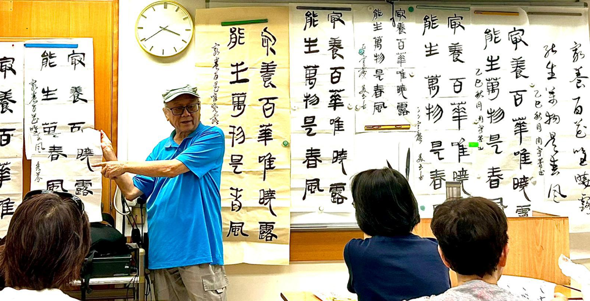

創會會長的話
《返古開新 : 穿越時空，漫遊書法藝術世界》
慶祝全港首屆銀雀山漢簡書法藝術展
漢字是中華文化的根脈所繫，是記載、保存與傳承中華文明之重要載體，亦是構建中華民族團結的文化紐帶。十五年前，我跟隨中帑老師開始研習中國古文字的書法藝術，包括甲骨文、金文及小篆。從文字源流的發展，古文字至今文字的承接，就是隸書。當時心中常常有一個疑問，何時篆書的「直長圓轉」，演變成隸書的「扁橫方折」呢？ 後來迷上漢簡書法，研習出土竹簡，漸漸找到答案的端倪: 曼妙的簡帛文字繼往開來，正是古今文字的轉化過渡!
在過往七年的歲月中，我更深深被自然簡樸的「銀雀山漢簡」所吸引。銀雀山漢簡共有竹簡 4,942 枚，另有數千殘片。 這些竹簡是1972年在山東省臨沂市銀雀山1號和2號漢墓中出土的。 從文化角度看，銀雀山出土的古代兵書，如孫子兵法及佚書孫臏兵法 具有重要的歷史、政治及軍事學的驚世價值。從文字學來看， 出土的漢簡書法藝術，上承篆書的工整圓潤，下達隸書的波磔恢宏。 正好漢簡成為我穿越古文字與今文字的時空的好機會。 現在我立了宏願，就是將殘缺的孫子兵法竹簡文字，用五年時間，補缺齊整，活化於世。
籌備本次銀雀山漢簡書法藝術展，既是幸運，亦是幸福。幸運是在一年半前，得到陳定璟老師大力支持，成立了「銀雀山漢簡書法藝術同學會」，很順利地向政府申請成為合法社團，成功申請到場地舉辦書畫展。與此同時，得到眾嘉賓及會員的支持，出錢出力，更得到執委會成員提出海量寳貴的改善建議，使我感到信心百倍，勇氣大增，豐盛幸福。
經深思熟慮，並得諸學友協力籌備，復得內子誠勉，遂創建「銀雀山漢簡書法藝術同學會」。
書法五體演變歷史悠久，漢簡在其中實際上有著承前啟後的光輝歲月，其風格古雅樸拙，字體用筆及佈局獨具特色，別樹一格。我希望書法同好大家一起返古開新，將書法注入漢簡的特色，發揮篆、隸、楷、行、草共融合體，讓漢簡繼續光耀明天 !
銀雀山漢簡書法藝術同學會
創會會長 陳寅添

創會副會長感謝詞
《感謝詞》
致 各位書法前輩與同道「機緣巧合」，正是促使「銀雀山漢簡書法藝術同學會」成立的主因！去年6月，陳寅添會長與我率先提出成立書法學會的想法，隨後與陳定璟老師深入溝通，一拍即合，當即啟動籌備工作。
作為初成立的學會，我們曾帶著對書法藝術的熱忱與些許忐忑，籌備這場展覽，從徵集作品時的殷切期待，及老師篩選作品時的反覆斟酌，再到展廳佈置時的細緻打磨，每一步都滲透着探索的初心。而讓這份初心得以落實的，是每一位會員的信任，和對我們這個初成立的執委會更是最珍貴的支持。
為了增添亮點與光彩，我們邀請了馮萬如先生、梁君度先生、吳任先生、陳用博士、梁啟明先生、馬潤憲先生、葉炯光先生、李堃銘先生為主禮嘉賓; 邀請參展嘉賓有麥錦超先生、徐貴三先生、陳志恆先生、馮鶴亭先生、廖鳳嬌女士、葉永潤先生、成大行先生、吳小玲女士，令展覽星光熠熠。
同時，我們也要向每一位關注展覽的觀眾、協助籌備的學長，以及為作品集出版給予指導的前輩致以誠摯謝意，是你們的無私付出，讓展覽的每一個環節得以順暢推進，是你們的寶貴建議，讓這本作品集得以完整呈現。
本作品集不僅收錄了作品，更定格了我們共同開啟書法旅程的起點。未來，「銀雀山漢簡書法藝術同學會」將繼續以筆為媒、以墨會友，期待與每一位志同道合的摯友，在一撇一捺中續寫與傳統文化的故事。
銀雀山漢簡書法藝術同學會
創會副會長 葉潔華
聯絡人
會長陳寅添（WhatsApp 60915272）副會長葉潔華 （WhatsApp 90362195)